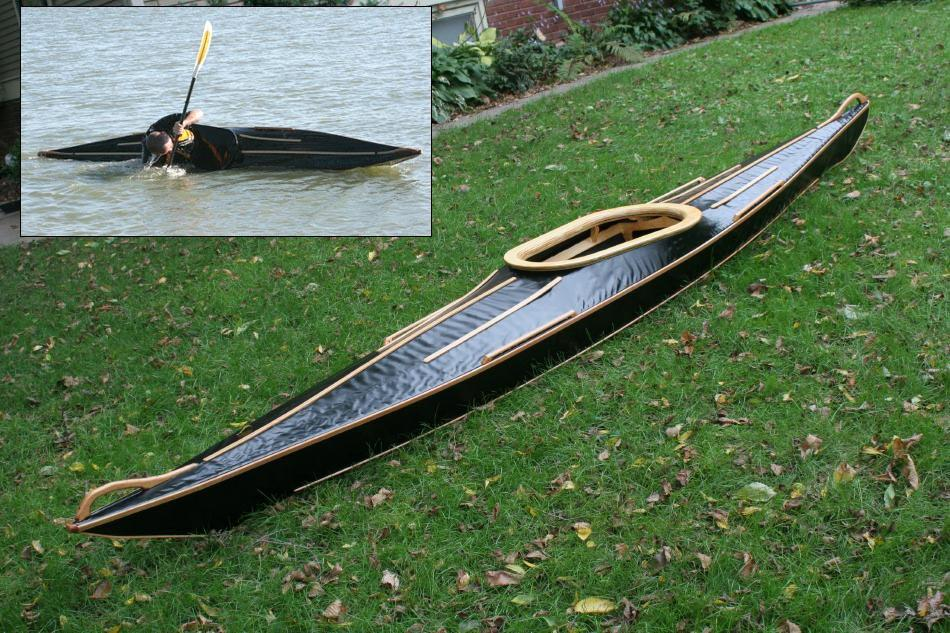

| Sea Cruiser by Russ Swadener (US) | Menu Previous Page Next Page |
|

Russ, from Omaha, Nebraska built a shorter ( 14' X 22"), wood, non folding version of the Sea Cruiser. . He reports that it is fast and quite in the water. With wood grab handles, and multiple wood rub strips, it has a very distinctive look. Use the {Back} key to return.
|
|